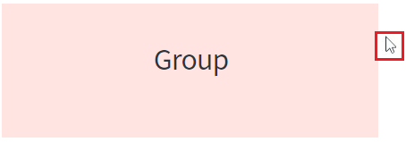
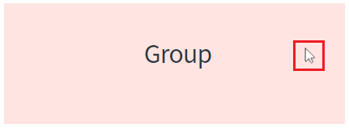
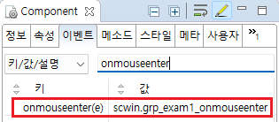

[Group] Event - onmouseenter (마우스 포인터가 영역 안으로 들어올 때 발생)
1개요
Group의 'onmouseenter' 이벤트 예제입니다. 'onmouseenter' 이벤트는 마우스 포인터가 컴포넌트의 영역 안으로 들어왔을 때 발생합니다.
2구현된 기능
'onmouseenter' 이벤트 발생 시 로그 출력하기
3예제 테스트 방법
3.1'onmouseenter' 이벤트 발생 시 로그 출력하기
1
STEP 1: 마우스를 Group 영역 밖으로 위치 시킵니다.
Image 1.브라우저(Chrome) 실행 예시 - Group 영역 밖에 마우스 포인터가 위치

2
STEP 2: 마우스를 Group 영역 안으로 이동합니다.
Image 2.브라우저(Chrome) 실행 예시 - Group 영역 안에 마우스 포인터가 위치

3
STEP 3: 실행 결과를 확인합니다.
마우스 포인터가 밖으로 이동되면 영역 '로그 확인'에 이벤트 정보가 출력됩니다.
브라우저의 개발자 도구의 콘솔(console)탭을 통해 자세한 이벤트 정보를 확인 할 수 있습니다.
Image 3.브라우저(Chrome) 실행 예시 - 개발자 도구의 콘솔

4구현 예시
4.1'onmouseenter' 이벤트 발생 시 로그 출력하기
1
STEP 1: Group의 'onmouseenter' 이벤트의 핸들러를 지정합니다.
예제 파일에서는 핸들러로 사용할 메소드명을 'scwin.grp_exam1_onmouseenter'로 정의하였습니다.
Image 4.웹스퀘어 스튜디오의 Component View - 이벤트 설정 예시

Example 1.Source
<!-- group 의 소스 본문 예시 --> <xf:group ev:onmouseenter="scwin.grp_exam1_onmouseenter" id="grp_exam1"> </xf:group>
2
STEP 2: 'scwin.grp_exam1_onmouseenter' 메소드를 정의합니다.
Example 2.Script
/** * Group "grp_exam1"의 onmouseenter 핸들러 * 마우스 포인터가 영역 안으로 들어올 때 발생. */ scwin.grp_exam1_onmouseenter = function(e) { //로직 구성 //컴포넌트 ID 가져오기 //this.getOriginalID(); //이벤트 타입 //e.type; //이벤트 정보 출력 console.log(e); };
5주요 API
onmouseenter